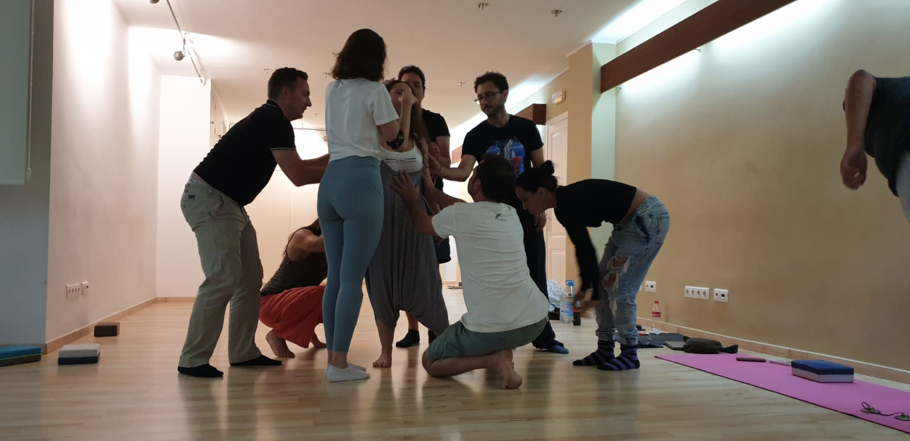
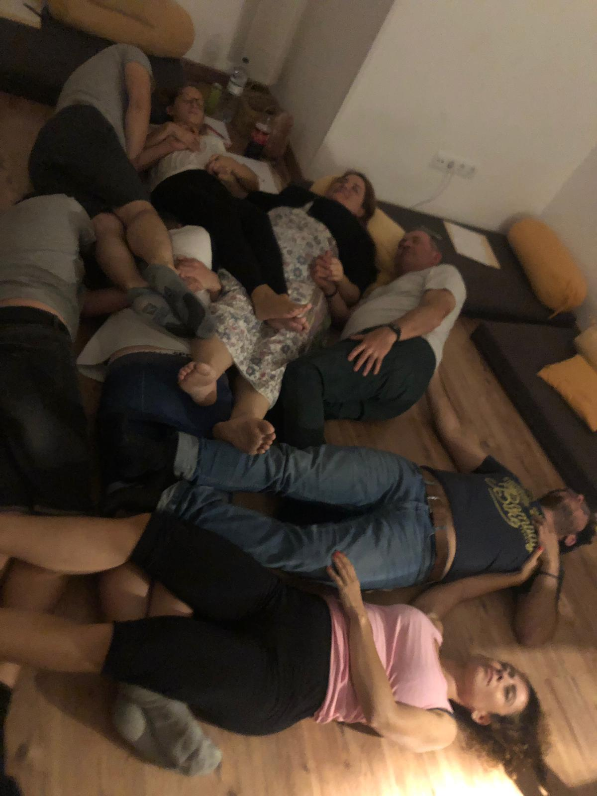
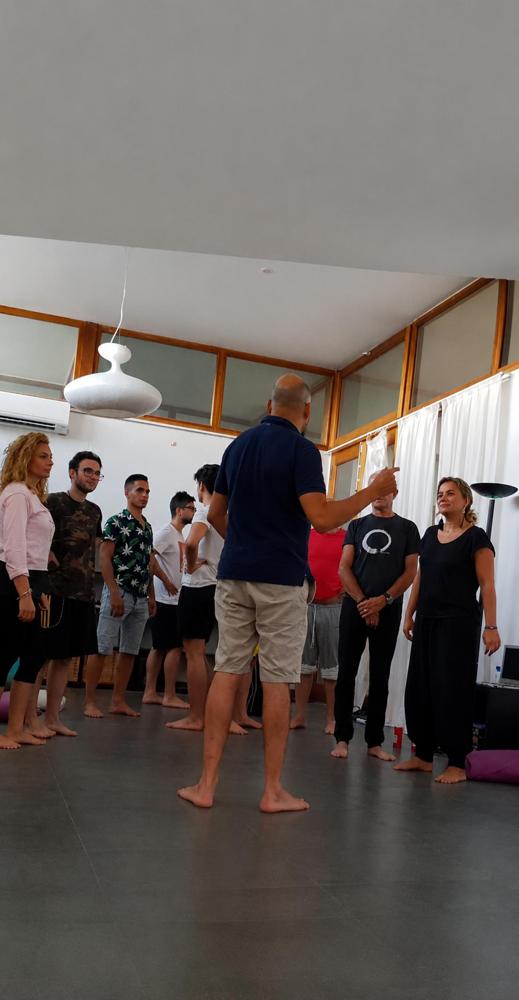
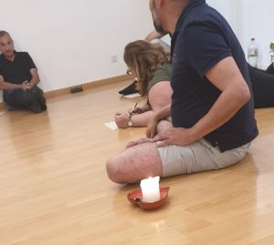

El viaje que comienza cuando dejas de huir de ti.
Quiero reservar mi plazaSi has llegado hasta aquí, probablemente no sea porque tu vida vaya mal. Quizá tengas trabajo. Quizá incluso una pareja. Quizá sonrías más de lo que la gente imagina.
Pero hay algo dentro de ti que lleva demasiado tiempo pidiendo atención. Un cansancio que no se quita descansando. Una tristeza que aparece cuando todo se queda en silencio.
Porque hay heridas que no se resuelven pensando.
Solo se transforman cuando dejamos de huir de ellas.

Desde pequeños aprendimos que sentir demasiado era peligroso. Así que empezamos a protegernos. Nos hicimos fuertes. Complacientes. Independientes. Perfectos. Cada uno construyó su personaje.
Y funcionó — nos ayudó a sobrevivir. Pero también nos alejó de quienes realmente éramos. Y mantener ese personaje acaba siendo agotador.
Este taller no pretende eliminar tu dolor. Pretende enseñarte a atravesarlo.
El origen real de tu dolor — no el síntoma, no la historia: la raíz.
Los mecanismos con los que llevas años protegiéndote sin darte cuenta.
El miedo al rechazo, al abandono y a no ser suficiente.
La ansiedad como intento de controlar lo que no puede controlarse.
Las relaciones que repiten siempre el mismo patrón aunque cambien las personas.
El personaje que construiste para sobrevivir — y cómo empezar a soltarlo.
El poder transformador del Vacío Fértil.
Cómo recuperar la energía que hoy gastas luchando contra ti.

En Gestalt existe un concepto precioso. Es ese instante en el que una versión de ti ya ha muerto... pero la nueva todavía no ha nacido.
La mayoría de personas sienten miedo en ese lugar. Y vuelven corriendo a lo conocido. Aunque les haga sufrir.
En este taller aprenderás a permanecer ahí. Porque es precisamente en ese espacio donde comienza la transformación real.
"La alegría no aparece cuando consigues controlar la vida.
La alegría aparece cuando dejas de luchar contra ella."
Durante ocho horas recorreremos un proceso cuidadosamente diseñado para acompañarte desde el lugar donde hoy estás hasta un espacio de mayor presencia, autenticidad y libertad.
No necesitas experiencia previa. Solo venir con la disposición de encontrarte.

Terapeuta Gestalt y Humanista. Desde hace años acompaño a personas que sienten que entienden perfectamente lo que les ocurre... pero siguen sin conseguir cambiarlo.
Mi forma de trabajar no consiste en darte respuestas. Consiste en crear el espacio para que aparezcan las tuyas.
Creo profundamente que nadie necesita convertirse en otra persona. Solo dejar de sostener aquello que nunca fue.
Quizá haya llegado el momento de dejar de escapar. Porque el viaje más importante no es el que te lleva a otro lugar. Es el que te devuelve a ti.
147€ Taller completo · 1 de agosto · Tarragona · Plazas limitadas